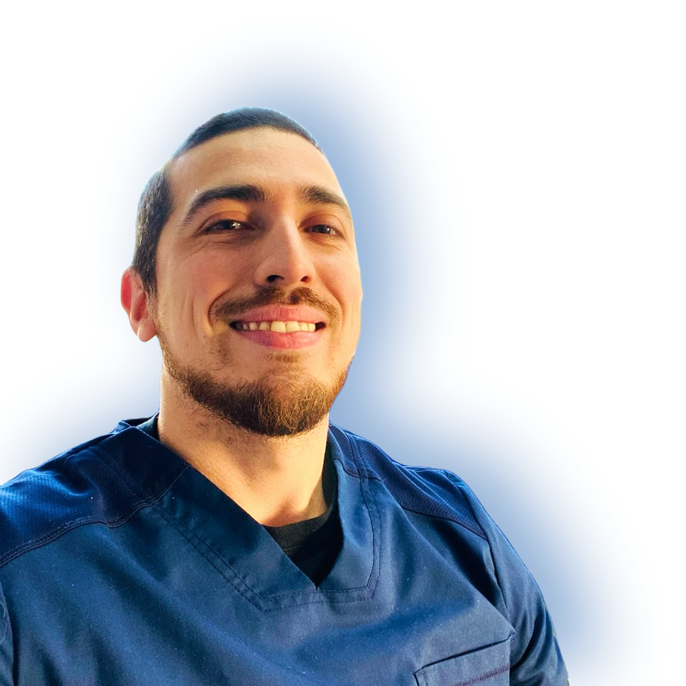

Dr. Luis Eduardo Pison Santana

Summary
I'm an Orthodontist turned programmer.
Education
- Cirujano dentista Universidad San Sebastián año 2014
- Diplomado en Oclusión año - Universidad del Desarrollo 2016
- Diplomado en Ortopedia temprana - Universidad de Concepción 2017
- Especialista en Ortodoncia y Ortopedia dentofacial - Universidad de Talca 2022
Job Experience
- Clinica dental Uno salud como Odontólogo general 2014-2018
- Desempeño como odontólogo general en el área de diagnóstico y operatoria
- Gerente subrogante
- Clinica dental Uno salud como Especialista en Ortodoncia - 2020 a la fecha
- Acciones de Ortodoncia, Ortopedia.
- Clínica dental Implatologíca como especialista en Ortodoncia - 2020 a la fecha
- Acciones de Ortoncia y Ortopedia
Skills
- Inglés avanzado
- Python basics
- Html basics
- CSS basics
- LLms experience building no-code apps
- 3d Digital design and planning software: Blender, B4D, Exocad, MeshMixer